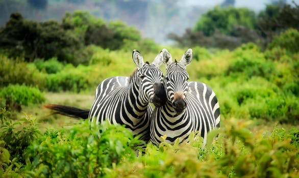

Top Adventure
The most popular adventure in South Africa is the safari. It's a once in a lifetime opportunity where you can get up close to wild African animals. The leopard, lion, buffalo, elephant and the rhino make up the "Big Five." They are the five most difficult animals in Africa to hunt on foot. A South African safari is one of the most adventurous and memorable things you will not only do in South Africa but probably in your life!